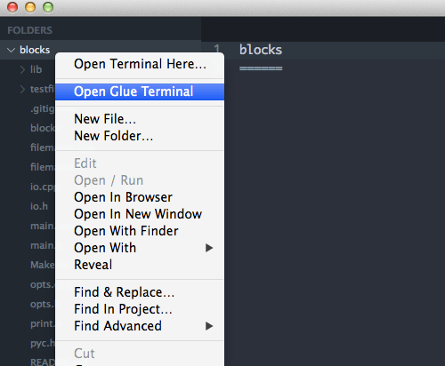
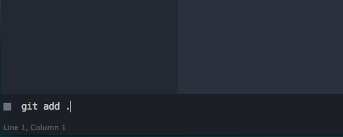
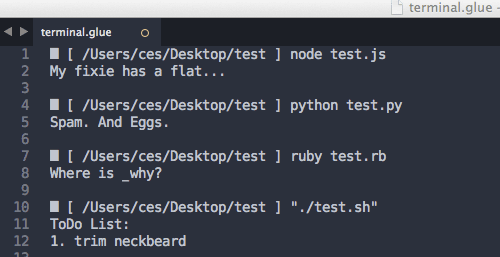

Glue¶
Join Your Shell & Sublime Text in Quasi-Perfect* Harmony¶
Glue is a cross-platform, extensible plug-in for Sublime Text 2 and 3 that connects your favorite editor to your shell.
Launch¶
Use the right click menu in your project sidebar:
the Command Palette:

or a keybinding:
Ctrl - Alt - G
Enter Commands¶
Use the command input box at the bottom of the screen to enter system commands just like you would in your terminal:
and the standard output is displayed in an editor view.
Scripting Languages¶
It works with scripting languages:
Inter-Process Communication¶
Pipelining data between processes works. You get the standard output from the final executable in the sequence:
Version Control¶
Version control tasks are accessible inside the editor:
Compile, Unit Test, Profile, Minify, Compress...¶
You get the picture.
File Management¶
Open files in the Sublime Text editor by file path:
$ glue open <filepath> [filepath2] [...]
or by wildcard pattern:
$ glue wco <wildcard>
And create new files with:
$ glue new
Extend Sublime Text With Glue Extensions¶
You can build Sublime Text extensions with your favorite language or extend Sublime Text with any system utility using Glue command extensions. These are aliases for system commands that can be called from the Glue command line using the syntax:
$ glue <your-command> [optional arguments]
You have the option to pass additional command line arguments, clipboard data, or the current working directory path to the mapped system command with template tags.
The Glue-Commands Directory¶
Create a directory in your Sublime Text Packages directory (Preferences > Browse Packages) that is named Glue-Commands.
The glue.json File¶
Create a new file in this directory with the following path Glue-Commands/glue.json.
Use the glue.json file to create Glue extensions with key = command name to value = command string mapping.
Example¶
You could make a command that executes a local image compression shell script on the path /Users/me/scripts/cruncher.sh with the following syntax:
{
"crunch": "/Users/me/scripts/cruncher.sh {{args}}"
}
Then use it in Glue like this:
$ glue crunch image.png
The mapped system command is executed as:
/Users/me/scripts/cruncher.sh image.png
in your current working directory and is accessible in any Sublime Text project.
Make as many as you’d like. You can use the following command to reference an alphabetized list of your extensions:
$ glue user
More detailed extension documentation (including additional examples) is available here.
Limitations¶
✱ Glue is a non-interactive interface to your system shell. See the limitations that result from this application structure.